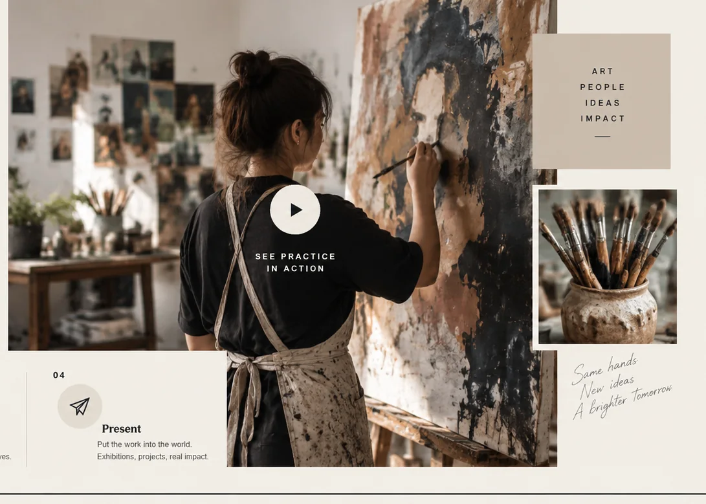
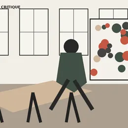
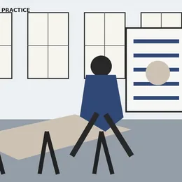
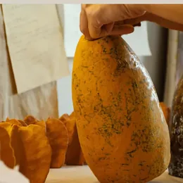
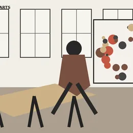

Learning by doing
Hands-on studio practice with expert guidance.
Stackly is a contemporary institute for art, design and creative practice — built around making, critical exchange and putting work into the world.

Every part of Stackly connects back to the studio: make, discuss, test, revise and share. We nurture curiosity, encourage experimentation and help creative ideas find their place in the world.
Hands-on studio practice with expert guidance.
Share ideas, get feedback and grow together.
Take your work beyond the studio.

From studios to public projects, our ecosystem brings together people, practice and ideas to create meaningful cultural impact.
Explore our ecosystem
Ideas become stronger when they move between disciplines, people and real situations.
Ideas become stronger when they move between disciplines, people and real situations. At Stackly, learning happens in the studio, through projects, collaboration and public engagement.
Explore studio practiceStart with a question. Explore, observe, understand.
Turn thinking into form. Experiment, iterate, create.
Share early, refine often. Learn from diverse perspectives.
Put the work into the world. Exhibitions, projects, real impact.


Different perspectives.
One stronger community.
Meet people who bring current professional practice into the studio. Faculty, mentors and visiting practitioners share knowledge, challenge ideas and support growth through real-world experience.
Meet the faculty
Working professionals in diverse fields.

Bringing industry perspectives.

Exploring new ideas and methods.

Connecting creative work to the wider world.
Continue exploring the Stackly Arts Institute experience through practice, people and public work.